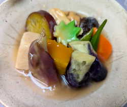

夏の精進炊き合わせ
- 調理時間：40分
- （一人当たり）
- カロリー：324kcal
- たんぱく質：17.6g
- 脂質：13.5g
- 炭水化物：34.0g
- 塩分：1.8g


＜2人分＞
- ・カボチャ
- 60g
- ・サツマイモ
- 50g
- ・ニンジン
- 40g
- ・ナス
- 1/2本
- ・オクラ
- 2本
- ・ミョウガ
- 2個
- ・干ししいたけ
- 2枚
- ・がんもどき
- 1個
- ・高野豆腐
- 1枚
- ・生麩
- 適量
A
- ・だし汁
- 500ml～
- ・薄口醤油
- 大さじ1
- ・みりん
- 小さじ1～2
- ・砂糖
- 大さじ1
- ・料理酒
- 大さじ1
- ・塩
- 少々
- 水溶き片栗粉
- 小さじ1～2
B


- Aの材料は下準備する。
・カボチャ（ワタをとり、一口大に切る）
・サツマイモ（輪切り）
・ニンジン（乱切り）
・ナス（ヘタを切って縦半分に切り、皮に格子状の切り目を入れる）
・オクラ（塩をまぶしてまな板で転がし産毛をとる）
・ミョウガ（縦半分に切る）
・干ししいたけ（水でもどして軸を切る）
・がんもどき（熱湯をかけて油抜きする）
・高野豆腐（お湯に10分ほど浸し、中まで戻ったら水気をしぼる）
・生麩（食べやすい大きさに切る） - カボチャ、サツマイモは耐熱容器にいれ、ラップをかけ500W3分程度、レンジにかける（少しかために）。
- 鍋に湯を沸かし、オクラを湯がき、冷水にとる。
- 鍋にBのだし汁と調味料を合わせ、沸騰したら中火にして、ナス、干ししいたけ、ニンジン、がんもどき、高野豆腐、生麩をいれて煮込む。
※だし汁は鍋の大きさに合わせて、ひたひた程度に調整します。 - 火が通れば、ナスを一旦取り出し（色が移るの防ぐため）、別の容器に煮汁とともに入れて味をしみこませる。
- カボチャ、サツマイモ、ミョウガを加えて、やわらかく煮えたら水溶き片栗粉を加えてとろみをつけ、火を止める。
- オクラを加え、味をしみこませ、粗熱がとれたら冷蔵庫に入れる。
よく冷えたら、器に盛り付けて完成。
夏の精進炊き合わせ
「盆」は仏教の盂蘭盆に由来します。インドの僧が「地獄で苦しむ母を救いたい」と釈尊に教えを乞うたところ、「７月１５日に供養をしなさい」といわれ、祭壇を設けて供養したことが始まりといわれています。現在では、月遅れとして８月１５日前後に行うのが一般的。お盆では、自宅にお迎えしたご先祖へお供え物をした後、家族や親せきで分けて食べる習わしですが、この時のお供え物は動物の殺生を禁じる内容のため、盂蘭盆の行事食は、精進料理となります。